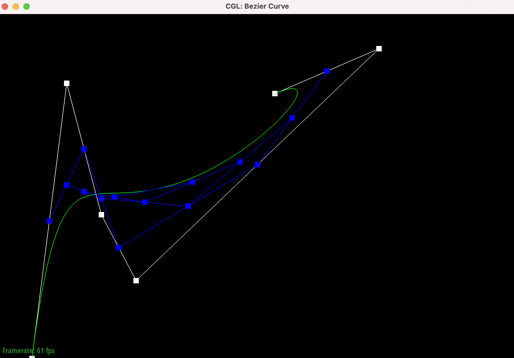

Project 2: Mesh Edit
Overview
In this project, we first implemented de Casteljau's algorithm on 2-D vectors, then iteratively expanded on this by implementing it on 3-D Vectors to support Bezier curves, then Bezier surfaces. We applied this on triangles to render a teapot.
The second part of the project focused on the usage of triangular meshes. Using area-weighted vertex normals, we implemented Phong shading to better blend colors between triangles in our mesh.
Lastly, we implemented two utility methods (edge flipping and edge splitting) to finally support upsampling via loop subdivision, and explored how to mitigate issues of curvature of sharp corners and edges by pre-processing edge splits.
Part 1
de Casteljau's algorithm is a way to evaluate Bezier curves using specific control points. Given a set of control n+1 points, p_0 to p_n, the algorithm computes linear interpolation between each pair of points p_i and p_{i+1} for i from 0 to
n - 1 at a particular value t. This generates a new set of n control points, and the algorithm recursively performs said interpolation until it reachs a single value. This value is a point that lies on the curve, and by evaluating for all t
from 0 to 1, those points will trace out the full curve.
Bezier curve, one step

Bezier curve, two steps

Bezier curve, three steps
Bezier curve, four steps

Bezier curve, five steps

Bezier curve with shifted control points and different t value
Part 2
To use de Casteljau's algorithm for Bezier surfaces, we now need a grid of control points, where each point is in 3D. Since de Casteljau's works with one array of control points at a time, we divide the grid into separate rows and run each
row through the algorithm. This results in one point per row on the "moving" Bezier curve, which can then be passed again into the algorithm to give a point on the actual surface. In other words, we only work with one dimension of the domain
of the surface at a time, and each dimension has its own interpolating value, u and v. By moving between different values for (u,v) between (0, 0) and (1, 1), we can trace out the full Bezier surface given the control points.
Part 3
In this task, we implemented area-weighted vertex normals by first traversing each face incident to the given vertex. In order to calculate the area of each face, we used the following formula: [JONALD INSERT HERE].
Once we had the area of each face, we then attained the unit face normal and multiplied the normal by the area of the face and add these to the vertexNormal, and finally we normalize by dividing by the sum of all the areas of faces incident to the vertex.
Rendering of a teapot without Phong shading.
Rendering of a teapot with Phong shading.

Part 4
To implement edge flips, we drew the before and after of an edge flip on two triangles of the mesh and labelled all the components involved i.e. edges, halfedges, vertices, and faces. Then, we just wrote down how each component was connected
to each other and added a boundary check for the two faces. We didn't really have any debugging issues or implementation tricks, but we mostly focused on having a clear and consistent naming system, so it would be easy to see which objects
were connected. Additionally, we used the renderer to visually verify that all the fields for each half edge, face, vertex, and edge were updated properly. Fortunately, we didn't run into any bugs.
Part 5
Similar to part 4, we guided our implementation by first assigning all existing vertices, halfedges, faces, and edges to variables so we could reassign pointers as needed, using the below image as reference.
After performing a boundary check to ensure that the halfedge of the edge we're splitting on is within bounds, we then initialized all of the new structs that come with splitting an edge.
This includes three new edges, two of which are perpendicular to the input edge (a-m and m-d), and a third edge (m-b
0that is parallel and an extension to the original edge, two new faces, 6 new halfedges, and one new vertex, which we simply computed by taking the positions of b and c and dividing by 2.
We then partitioned our code into four segments corresponding to each triangle (top-left, top-right, bottom-left, and bottom-right), and manipulated all necessary pointers to ensure that
all structs were pointing at a valid halfedge, and all halfedges had valid references.
Part 6
We implemented loop subdivision by separating the process into three parts.
The first part calculated the new position of all existing vertices by applying a weighted sum of all neighboring vertices and storing that in that particular vertex' neighbors.
We also calculated the position of all newly created vertices by iterating through all the edges in the mesh, and traversing the half edges associated with each edge to yield the 2 adjacent vertices
to the newly created point, as well as the vertices directly above and below the newly created vertex. Since the vertex wasn't created yet, we stored the position inside of the corresponding edge.
With the positions of all new and updated vertices determined, we moved to subdivide the original mesh by first iterating through all the edges and splitting each one. In order to avoid an infinite loop,
we modified our splitEdge method to mark any newly created edges with a boolean flag isNew. After we were done splitting each edge, we went on to flip all edges that connected an existing vertex and a newly created vertex.
Since the splitEdge method creates 3 new edges but only 2 of them meet this criteria, we modified the edge struct to add a newConnect field that acted as a flag, so that the one edge that overlapped with an existing
edge would not be flipped.
Lastly, we updated all of the vertex positions and reset all of the flags (isNew, newConnect) to support further upsampling.
Upsampling not only makes the size of each triangle smaller (as they're separated into 4 separate triangles), but on a higher level, they smooth out any sudden changes in the orientation of the trianglular mesh.
In the below image, this smoothing is desired, as we maintain the detail of the cow while making the image smoother.
A cuter cow, one iteration of upsampling
A very cute smooth cow, two iterations of upsampling
However, such smoothing is not desired when upsampling something like a cube. Below, we can notice how the vertices of the cube become smoothed out, rendering the cube into a polygon not very reminiscent of a cube.
Cube, one iteration of upsampling
Cube, two iterations of upsampling
Cube, three iterations of upsampling